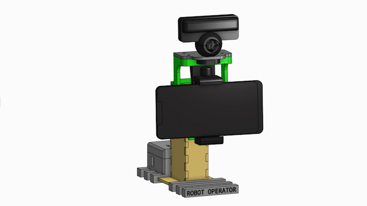

Tracking robot
Using only 2 “MG995” servo motors, PS3 Eye camera, ATmega328P microcontroller and cheap mechanical parts a robot prototype was modelled and built.

Using only 2 “MG995” servo motors, PS3 Eye camera, ATmega328P microcontroller and cheap mechanical parts a robot prototype was modelled and built.
Captured frame's color format is converted from RGB to HSV. Selected object's color is found within the required HSV color space. A mask is created that finds the required color in captured frame. After that erosion and dilation is carried out. After that we find the biggest contour and it's centroid coordinates. Then deviation in X and Y axes is calculated from the center of the screen and the centroid coordinates. This error is sent to the microcontroller.
GUI Example of color tracking:
Mounted phone captured video of tracking an orange:
Google's "MediaPipe" api is being used for high speed face detection. “MediaPipe” is used because the detection algorithm is executed very rapidly (up to 100 frames per second) and face can be detected in various scale and orientation. After detecting face, the face bounding rectangle's coordinates are obtained. Then center of this rectangle is found. And finally deviation from frame's center point to the center of the rectangle is calculated and sent to the microcontroller.
GUI Example of face tracking:
Mounted phone captured video of tracking a human face:
In this work, robot control (orientation regulation) is done by a microcontroller. The input of the system is always constant - 0. The computer sends yaw and pitch error through serial communication to the microcontroller. Using 2 discrete PID controllers the microcontroller tries to minimize these errors. The calculated value from PID is added to the current set value of the motor. Software limitation is used to prevent robot from braking it's parts.
Controlled system model: